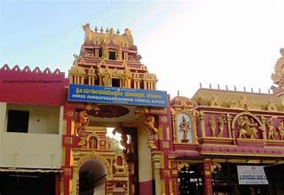

📍 Location
Kateel Temple is located near Mangalore in Karnataka, about 25–30 km from the city. It is uniquely situated on a small island in the Nandini River, connected by bridges on both sides.

Kateel Temple is located near Mangalore in Karnataka, about 25–30 km from the city. It is uniquely situated on a small island in the Nandini River, connected by bridges on both sides.
The main deity is Goddess Durga Parameshwari, a powerful form of Adi Shakti.
The temple has ancient roots and is one of the most famous temples in coastal Karnataka.